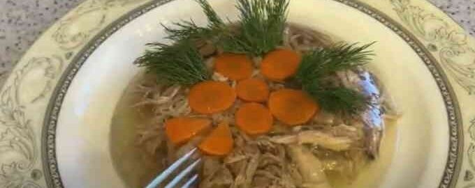

Закуски
-
Крабовий салат

Інгредієнти:
- Крабове м'ясо - 1 банка
- Огірок - 1 шт.
- Яйце - 2 шт.
- Майонез - 3 ст.л.
- Зелень - за смаком
Приготування:
- Крабове м'ясо дрібно порізати.
- Огірок теж порізати невеликими кубиками.
- Яйце зварити, очистити і також порізати кубиками.
- Всі інгредієнти змішати у глибокій мисці.
- Додати майонез і за бажанням зелень.
- Перемішати і подавати.
Холодець з індички

Інгредієнти:
- Гомілка індички
- Індичка
- Вода
- Кухона сіль
- Морква
- Чорний перець
- Часник
- цибуля ріпчаста
- Соняшникова олія
- Петрушка
Приготування:
- Спочатку ретельно промийте м’ясо індички під проточною водою. Обсушити за допомогою паперового рушника.
- Цибулю і часник очистіть від лушпиння. Головку цибулі розріжте на 2 частини.
- Морквину добре сполосніть водою, щоб змився весь бруд
- Деко застеліть листом фольги і змастіть рослинною олією. Покладіть на фольгу стегна і гомілку індички,
вимиту моркву, розрізану цибулину і зубчики часнику. Поставте деко з м’ясом і овочами в добре нагріту
духовку (200ºС) хвилин на 25. За цей час м’ясо встигне повністю прогрітися, а овочі почнуть виділяти
приємний аромат.
- Вимкніть духовку і покладіть м’ясо і овочі в чашу мультиварки. Залийте вміст чаші 3-3, 5 літрами води
(стежте, щоб вода не виходила за максимальний показник на бортику чаші). Також не забудьте покласти в чашу
перець, сіль і вимиту зелень петрушки. Встановіть режим “варіння” тривалістю 3,5-4 години. Закрийте кришку
приладу і натисніть кнопку «СТАРТ».
- Коли мультиварка закінчить програму і подасть звуковий сигнал, акуратно дістаньте м’ясо на велику тарілку і
почекайте, поки воно охолоне до такої температури, при якій його можна буде брати в руки. Відокремте м’ясо
від кісток і наріжте його невеликими шматочками, а краще – розберіть вручну на волокна.
- Бульйон потрібно процідити через сито з марлею, складеної в кілька шарів.
- Перекладіть подрібнене м’ясо в формочки, в яких ви будете охолоджувати холодець, і залийте індичку
процідженим бульйоном.
- Накрийте форми кришками або плівкою і відправте в холодильник, щоб бульйон міг, як слід застигнути. Перед
подачею на стіл акуратно дістаньте холодець з форм.
Потім рецептів буде БІЛЬШЕ!